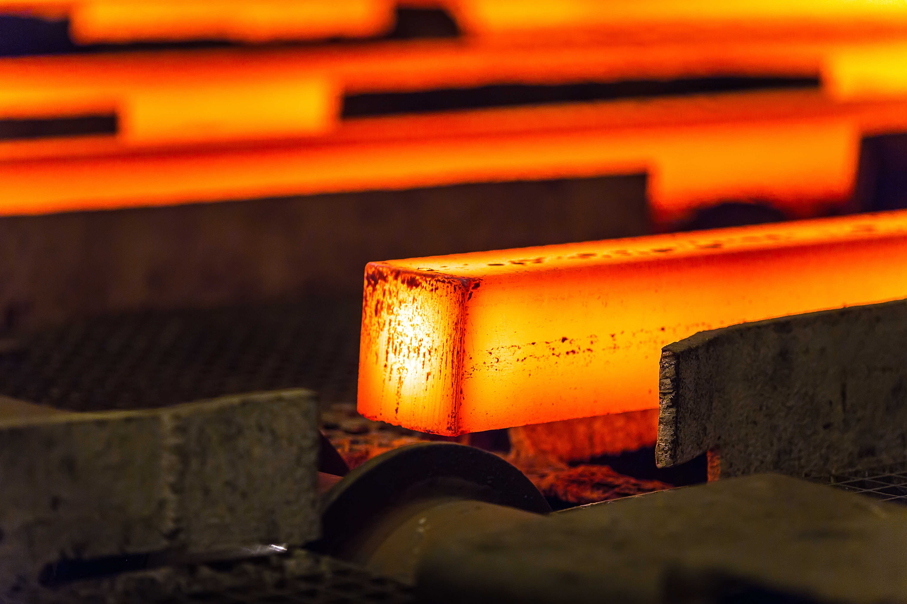
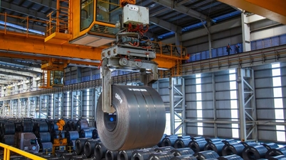
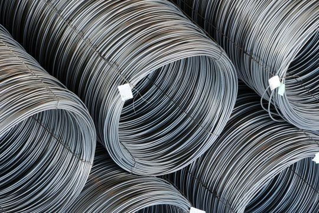
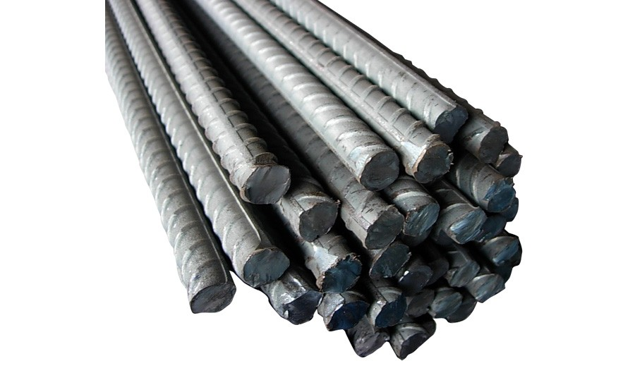
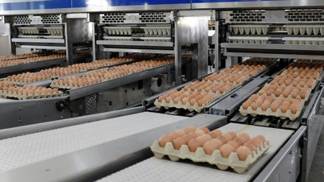
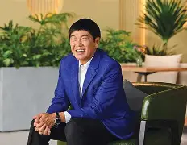

鉄鉱石→高炉→圧延まで自前で握る一貫生産。建設用鉄筋は国内シェア36%超でNo.1、HRC（熱延コイル）は国内生産の約6割、鋼管もNo.1。
豚66万頭超で国内トップ10、鶏卵は日産ほぼ100万個・北部でクリーン卵シェア首位。FY2025は売上約500億円・純益約97億円と、鉄の景気変動を和らげる。
工業団地の開発・運営で、外資のベトナム進出を受け止める。コンテナ・家電・金属加工も。鉄の需要家であり、供給者でもある。



FPTのビンが数学者なら、ホアファットのチャン・ディン・ロンは商人だ。1961年、北部ハイズオン省に生まれ、国民経済大学で経済学を学ぶ。最初の商いは、旧ソ連圏から中古の機械や部品を運ぶ貿易だった。1992年、盟友チャン・トゥアン・ズオンとともに、その小さな貿易会社を興す。
鋼管で足場を固めたロンは、2000年代、誰もが尻込みする道へ踏み込む。高炉一貫製鉄だ。
鉄鋼は、需要が来る前に巨大な設備を建てる産業である。数十億ドルを先に注ぎ込み、市況が崩れれば会社ごと沈む——重厚長大の、最も残酷な博打だ。
銀行は融資に慎重だった。投資家は「無謀だ」と止めた。ベトナムの一民間企業に、臨海の巨大製鉄所を回せるのか、と。
それでもロンは、中部の海沿いDung Quatに巨大な高炉を築く道を選ぶ。輸入に頼ってきた鉄を、自分たちの手で鋳る——ただ、その一点のために。
「ベトナムが発展する限り、道路が敷かれ、ビルが建つ。その足元には、いつも我々の鉄がある。」
派手なメディア露出を好まない「沈黙の鉄鋼王」は、いまForbesの推計で純資産25億ドル、資産源は「鉄鋼・自力（Self Made）」。中古機械を運んだ商人は、ベトナム最大の民間製造業を一代で築いた。
2025年12月に着工したレール・特殊鋼工場（能力70万トン、独SMS・英Primetals製ライン）。高速鉄道・都市鉄道のレールと特殊鋼を、2027年に初出荷する計画だ。ロン会長は約670億ドル規模の南北高速鉄道に対し「鉄道向け鋼材（推計1,000万トン）を、輸入より安く全量供給する用意がある」と表明。臨海一貫＋自社港のコストで、中国製の安値攻勢に挑む。対中HRCにはアンチダンピング（23〜28%・2025年7月発効）も追い風だ。
| 銘柄 | 事業（構造） | 市場 | 時価総額（円換算） | PER | PBR |
|---|---|---|---|---|---|
| HPG／ホアファット | 高炉一貫（上流） | HOSE | 約1兆1,000億円 | 7.9x | 1.30x |
| HSG／ホアセン | カラー鋼板・メッキ（下流） | HOSE | 約520億円 | 13.2x | 0.73x |
| NKG／ナムキム | カラー鋼板・メッキ（下流） | HOSE | 約325億円 | 35.0x | 0.71x |